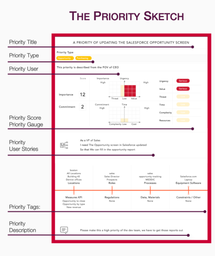

Stop backlog overload and start delivering the important things first. In minutes, PriorityRocket turns vague work requests into language people can understand so teams can produce valuable work faster.
Build a better backlog
Fire Up The Backlog!
PriorityRocket’s users describe important work in the form of a Priority Sketch.
The Priority Sketch gives every user, actor & role the opportunity to describe user needs from a quick but highly detailed point of view.
PriorityRocket creates clarity not to just "what needs to be done", but also "why it should be done".
PriorityRockt takes the common user story and turns it into fuel for alignment and understanding.

Use For Backlogs of Any Kind
-
User Needs
-
Feature Development
-
Software Purchasing
Rapidly Align Teams Using Methods Hundreds of Millions of People Depend On
Everyday
-
imageRoot Cause Analysis
-
imageStory Points -PMI
-
imageAgile User Stories
-
imageNet Present Value and DCF
Background
PriorityRocket is built upon giant ideas most people use. With a mix of methods ranging from Ishikawa's root cause/fishbone diagram, Net Present Value to the classic project analysis "Schedule, Scope, and Resources"; user PriorityRocket to create a common way to describe work priorities no matter what industry, department or job you are in.
Image courtesy of Scrum.org
The PriorityRocket approach was designed for Scrum and Agile teams as a way to help explain why a task belongs in the backlog. Prioritization is a challenge for virtually all organizations. Better interpersonal understanding improves work focus and reduces wasted time. If you work from a backlog, PriorityRocket can help.
- Agile
- Scrum
- Lean Manufacturing
- User discovery
- Opportunity sorting
- Design Sprints
- and many more.
Get the skills teams need to execute more right things faster with PriorityRocket
training.